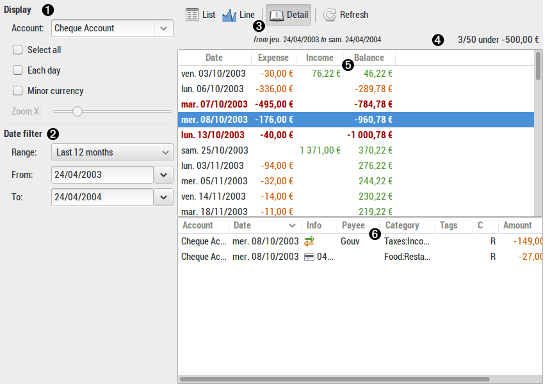
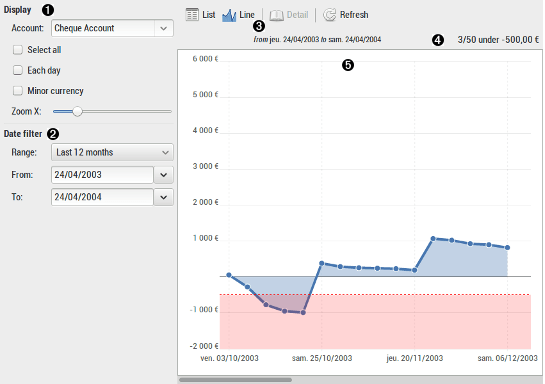

Using balance report
 
 Display
Display
| Account | select the account to display result for |
|---|---|
| Select all | select all accounts |
| Each day | select to display each day, in not checked only days with value are showed |
| Zoom X | select the X zoom factor in real time |
 Date filter
Date filter
| Range | fast select a date with predefined range |
|---|---|
| From / To | specify date bound limit to restrict the results to |
 Tool bar
Tool bar
The tool-bar is the main control of the display. All tool-button have a tool-tip that will help you know what action will be launched when you click on the tool-button.
 Infos
Infos
Inform you about the number of transaction in balance, the total number of transaction and the value of the balance for this account.
 Result list
Result list
The result list display the computed balances according to the current selection.